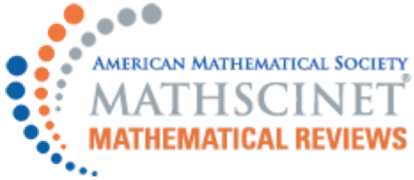

I am a postdoctoral fellow at SISSA, Trieste. Before that I was at Max-Planck Institut für Mathematik in Bonn. Before that I was a PhD student in Stavanger, under the supervision of Martin Gulbrandsen and Lars H. Halle. My PhD thesis is available here.
Here are lecture notes (under construction: comments welcome!) for the course Techniques in Enumerative Geometry
taught at SISSA in Fall 2019.
The Algebraic Geometry Seminar.
My research interests include moduli spaces of sheaves, curve counting on Calabi-Yau and Abelian threefolds, and motivic Donaldson-Thomas invariants. I am also interested in derived categories of coherent sheaves and Fourier-Mukai transforms. My papers can be found on ArXiv and here. Some slides of talks I gave can be found here. Here are my coauthors.
Ravi Vakil's page: upcoming conferences
in Algebraic Geometry.
 Mathscinet (and how to use it on the road).
Stacks project
Stromboli: Dark skies. Norway: Lysefjord, Lofoten Islands, Preikestolen. Svalbard: Summer, Winter. Iceland: Westfjords.
The night sky. Movies. A painting by A. Kowalski. The physical world. What intellectuals used to be like. B. Obama interviews Sir David Attenborough.